Example Module Ain't Core
(But it Ain't Contrib Neither)
Who is this person?

Tess Flynn
Module co-maintainer for
Flag
Flag Friend
Examples
What is Example Module?
The Most Useful, Useless Module Ever
Provides real, functional modules
...that should never be used on a real site
Code Examples For Drupal Developers
The Examples for Developers project aims to provide high-quality, well-documented API examples for a broad range of Drupal's core functionality.
Core APIs Only
For New and Old Drupal Devs
Help for writing modules
Example code for new/updated APIs
Why example code?


Isn't core code enough?
Source code is a medium
While the target is execution...
...how it's written is important!
Learning from core code is confusing
Modules not isolated from each other
Comments for information, not for instruction
Example code provides context and connection
How is example module developed?
Like many other modules!
Volunteer-driven
Features requested by the community
Core vs. Examples Commits
But what really happened?
What does that mean for Examples?
Examples is special
Bootstraps many contrib modules
Signals to contrib devs core is ready
So what's the problem?
Drupal 8 changed the rules
Significantly longer dev cycle
Significantly different code

Significantly different code

Significantly different code

Knowledge Silos -- Drupal 7.x

Knowledge Silos -- Drupal 8.x
Knowledge Silos -- Drupal 8.x
The Shadow of Doubt Hangs Over all Drupal APIs

The Shadow of Doubt Hangs Over all Drupal APIs

Example Module Ain't Contrib
Development Strongly Tied to Core
In a way that isn't true for other contrib modules
In a Perfect World...
In a Perfect World...

In a Perfect World...
In a Perfect World...
In a Perfect World...
Contrib has Limited Visibility
Examples module is...all but impossible to find unless you're already "in" with the community.
‐ Angela "webchick" Byron


We've Got to Make That Shorter
Examples Provides Tests for Core
Example modules could be used by core tests as "Mock modules", so fewer of those mock modules would be required.
‐Randy Fay (rfay)


Bugs are the Tip of the Iceberg

Bugs are the Tip of the Iceberg

Bugs are the Tip of the Iceberg
Bugs are the Tip of the Iceberg

Solves Maintainership Issues

Examples Helps People Learn Core
Examples Helps People Learn Core

Examples Helps People Learn Core

Examples Helps People Learn Core

Examples Helps People Learn Core

Examples Helps People Learn Core
Isolated Modules Mean Easy Debugging
Well commented code lowers barrier to contributing
Sounds Great, Right?
Except...
Example Module Ain't Core
Maintaining Examples while Developing new APIs is Painful
"If anything lacks tests, then we need better test coverage, not examples."
‐ Daniel F. Kudwien (sun)
Core Tests are Weird
Test cases have to account for mal-use, abuse, & pure stupidity
Tests complicated enough without Example code overhead
Examples are pure documentation and should not conflict with active development.
Motive and Purpose Mismatch
Examples' goal is to support contrib devs
...not be core's test case
In Core, Examples Wouldn't be Isolated
Ruins key advantage of Example code
Would require special workflow inside normal core workflow
Writing Example Code is a Skill
More than just adding lots of comments
Different considerations compared to "production" code
Examples needs to move faster than core
Ain't Neither
We Need a Third Option
Examples Provides Checks and Balances Against Core

Examples Provides Checks and Balances Against Core
Examples Provides Checks and Balances Against Core

Examples Provides Checks and Balances Against Core
Examples Provides Checks and Balances Against Core

Examples Provides Checks and Balances Against Core

In-Core Examples Would Have a Weird Dev Cycle
Disable at the beginning
Enable near the end?
https://groups.drupal.org/node/436203
Where Should Examples Live in Core?
While keeping it hidden from users?
Semantic Versioning Means Core is Fast(er)
We're Trying to Solve The Wrong Problem
The problem is people.
Summary
Let's Not Point Fingers
Let's Make Examples Happy